- Issue
- #32 · M1 app shell states
- PR
- #81
- Commit
- 1d65354
- Runtime
- FastAPI + Vite + Chrome
- Database
- 隔离 SQLite
- Phase
- demo / scaffold / live 均实测
Harness Evolution · PR #81 · after
M1-09 应用壳与三态集成冒烟复测
在真实 Chrome、Vite、FastAPI 与隔离 SQLite 上复测三入口、共享三态、demo 角标、409 Message、Vue Flow 首帧和响应式布局。13 个运行时场景中 12 个通过；health 503 使用统一 ErrorResponse 时触发前端 TypeError 与白屏，因此错误态验收仍失败。
13运行时场景
12通过
1失败
0Vue Flow warning
Environment and Artifact
2026-10-25 · macOS · Chrome · localhostScenario Matrix
12 pass · 1 fail| # | 场景 | 结果 | 观测 | 证据 |
|---|---|---|---|---|
| 01 | Sessions 默认页与三入口 | PASS | 新密码重登后进入 /sessions；Sessions、Errors、Evolution 均可见，Sessions active，空态与 demo 角标正确。 | screenshots/02-sessions-demo.png |
| 02 | Errors 占位 | PASS | /errors 为已鉴权占位页，active 为 Errors；显示“暂无问题”并明确后续 milestone 接入，没有模拟问题行。 | screenshots/03-errors-placeholder.png |
| 03 | Evolution 与 Vue Flow 首帧 | PASS | Evolution 显示空态与 320px Vue Flow 容器；顺序导航及全新标签直接深链均无 Vue Flow warning/error。 | screenshots/04-evolution-placeholder.png direct canvas=1080×320 · dev logs=0 |
| 04 | 强制首登改密入口 | PASS | 临时管理员登录后进入 /change-password?redirect=/sessions，受保护壳层未闪现；新密码保存后进入 Sessions。 | screenshots/01-force-password.png |
| 05 | 用户菜单 | PASS | 窄视口下用户菜单可展开，退出入口可见且位于视口内。 | screenshots/05-user-menu.png |
| 06 | 退出与未登录回跳 | PASS | 退出后回到登录；/sessions、/errors、/evolution 分别跳到带原路径的安全 redirect，未渲染受保护内容。 | screenshots/06-unauth-redirect.png redirects=/sessions,/errors,/evolution |
| 07 | 新密码重新登录 | PASS | 改密后的账号成功重新登录，并按最近未登录目标回到 /evolution 后继续导航。 | HTTP login=200 · mustChange=false |
| 08 | Health loading | PASS | health 延迟 2.5 秒时显示共享 LoadingSkeleton“正在连接 API”，TopNav 与 shell 保持可见。 | screenshots/07-health-loading.png |
| 09 | Health 503 ErrorState + retry | FAIL | 真实 503 ErrorResponse 被当作 HealthResponse；App 读取不存在的 db，出现 TypeError 与白屏，ErrorState/retry 未出现。 | screenshots/08-health-error-retry.png console-main.json |
| 10 | 409 RUN_BUSY Message | PASS | 409 health 注入显示固定定位 ElMessage“已有任务正在运行”；shell 保留，无整页 ErrorState。 | screenshots/09-conflict-toast.png toast position=fixed |
| 11 | Demo 角标 phase 三分支 | PASS | demo 显示“演示数据”；重启 API 为 scaffold 与 live 后角标均隐藏。 | screenshots/02-sessions-demo.png screenshots/11-scaffold-no-badge.png screenshots/12-live-no-badge.png |
| 12 | Seed 幂等与无假领域数据 | PASS | fixtures:seed 连续两次返回同一管理员 id；SQLite 行数为 users=1、job_runs=0、events=0，无会话/问题/probe 假数据。 | same admin id across two runs rows users=1 job_runs=0 events=0 |
| 13 | 390px 响应式 | PASS | 390×844 下 scrollWidth=clientWidth=390，用户菜单右边界 366px，三入口与退出入口均可操作。 | screenshots/10-narrow-viewport.png scrollWidth=390 · clientWidth=390 |
Issues and Observations
P1 Health 503 ErrorResponse 导致 TypeError 和白屏Health 503 ErrorResponse 导致 TypeError 和白屏
- 位置
- apps/web/src/api/health.ts 与 apps/web/src/App.vue；统一 503 error envelope 进入 HealthResponse
- 实际
- fetchHealth 接受 503 并返回 { error }；App 读取 data.db.ok，浏览器记录 TypeError 并白屏。
- 期望
- 显示共享 ErrorState、错误码与重试入口，TopNav 和 shell 保持。
- 根因
- acceptedStatuses 包含 503，绕过了统一错误解码；503 被静态断言为 HealthResponse。
- 复现
- 让 /api/health 返回 503 {error:{code:HEALTH_UNAVAILABLE,...}} 后刷新受保护页面。
未修复 · PR comment 6395663803
Evidence
12 screenshots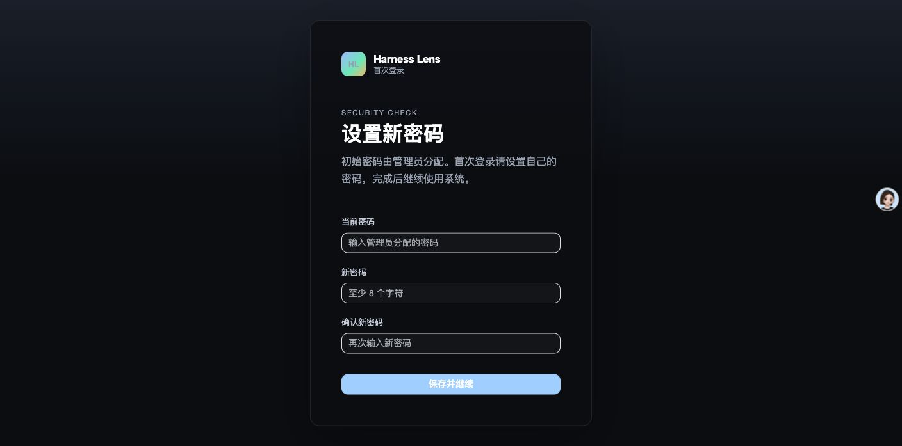
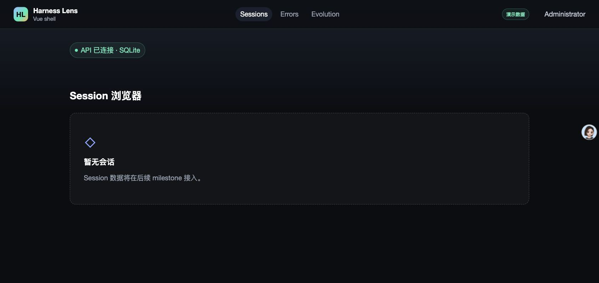
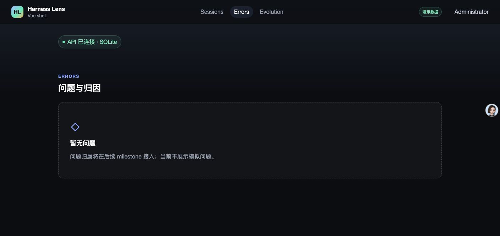
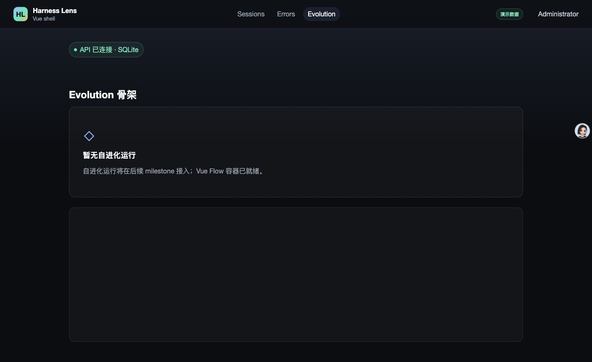
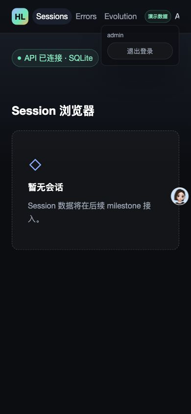
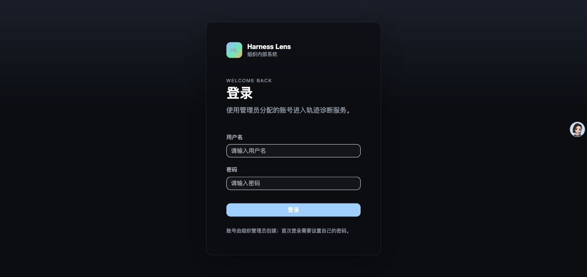
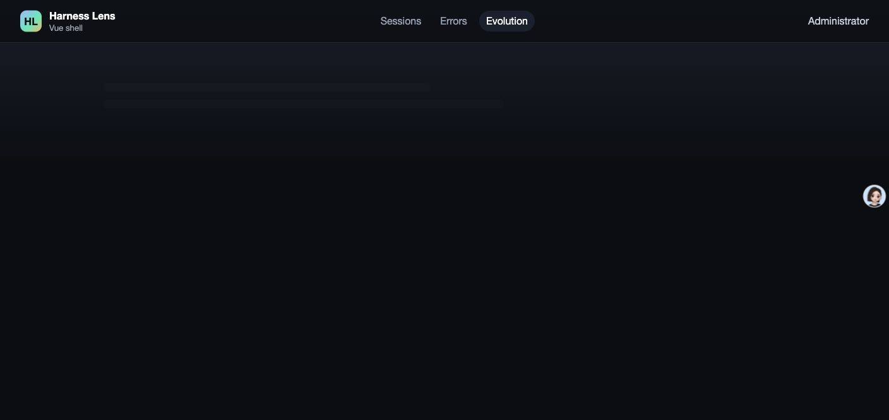
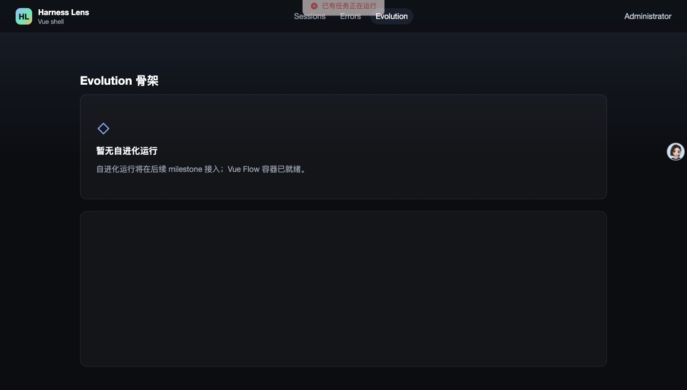
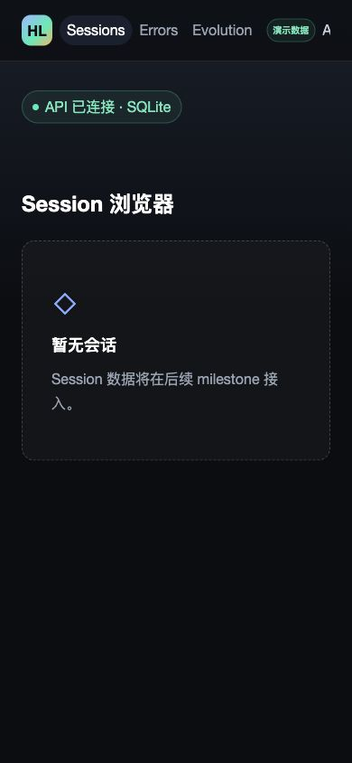
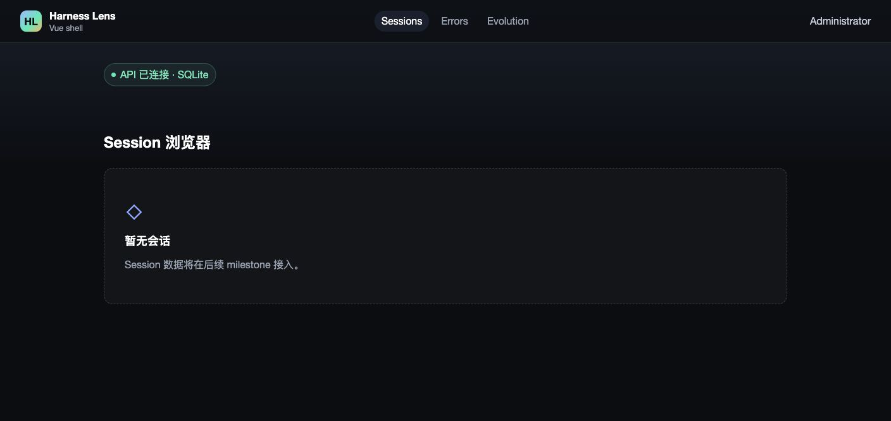
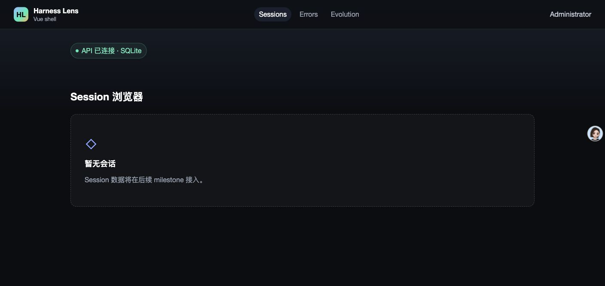
Automated Coverage Assessment
4 areas reviewed| 区域 | 覆盖 | 结论 | 建议 |
|---|---|---|---|
| 三入口与鉴权 | 真实 Chrome + FastAPI | Sessions/Errors/Evolution、active、安全回跳和用户菜单均已实测。 | 保留真实 Chrome E2E 作为 CI 基线。 |
| 共享三态与 409 | 真实 Chrome + 故障注入代理 + HTTP | loading、409 Message 通过；标准 503 ErrorResponse 触发 P1 白屏。 | 先修正 fetchHealth 的 503 解码，再从标准 ErrorResponse 重测 ErrorState 与 retry。 |
| Vue Flow 首帧 | 顺序导航 + 全新标签深链 | 容器首帧为 1080×320，控制台无 Vue Flow warning/error。 | 保留尺寸回归和直接深链 E2E。 |
| Seed 幂等 | 真实 CLI + SQLite | 重复执行复用同一管理员 id，领域表仍为空。 | M2 继续由 m2-01 管理 fixture corpus。 |
Conclusion
需修复本轮修复了 Vue Flow 首帧 warning，但真实 503 ErrorResponse 暴露了新的 health 错误态白屏，不能合并。
- Vue Flow 直接深链控制台清洁已通过。
- P1 已在 PR #81 留言，等待失败测试复现与 pr-review-fix。
- 修复后必须重新执行本完整冒烟。
证据源：Computer Use Chrome 截图、控制台、故障注入 HTTP 与隔离 SQLite。生成 HTML 不应手改。